级数¶
约 7732 个字 34 张图片 预计阅读时间 39 分钟
什么是级数¶
总结一下，数列是一个集合（可以有限或无限），而级数是无限数列项相加的结果，关键在于是否将数项进行无穷相加的过程。
目标：判断收敛性，求和
-
概念
无穷级数
几何级数
通项
部分和
部分和数列
余项
-
收敛，发散
收敛的必要条件
柯西收敛准则：\(\forall p\)
调和级数
-
性质
线性
部分和==！！改变级数有限项，不改变级数收敛性→级数的有限项可随意构造==
重排==（括号作用，不可改顺序）==
数列极限
特殊级数：¶
- 几何级数\(x^n\) ⇒\(\frac {1-x^n}{1-x}\)
|x|<1:收敛
|x|≥1:发散
- 交错p级数:\((-1)^n\frac{1}{n^p}\)
p>1:绝对收敛
0<p≤1:条件收敛
p<0:发散
-
带ln的p级数：\(\sum_{n=2}^{+\infty}\frac 1{n^p(lnn)^q}\)
p>1:收敛；
-
p=1:
q>1:收敛
q≤1:发散
0<p<1:发散
-
数项级数¶
正项级数自身有何特色？¶
一定====单调
只关注无限端处的项（n>N时），不关注有限项 （只要无限处为正项级数，即可当正项级数处理）
收敛的充要条件==（只适用正项级数）「部分和是否有界」==
敛散性的判别法¶
（柯西收敛准则）
（正项级数收敛的充要条件）
-
比较判别法
先预判，选择放缩方向，再找到已知收敛性的比较级数
注意：判别法比较的都是通项即an而非Sn
-
极限判别法(就像比较判别法的极限形式)
首先保证\(lim_{n→+\infty}a_n=0\)(为无穷小)
只要找所求级数通项的==等价无穷小==即可（通项为同阶无穷小的级数敛散性相同）(e.g与p级数比较)
-
比值判别法
（相除有化简：==\(q^n,n!\)====）==
巨大的优势：不用找人比较！
巨大的劣势：只能判别比几何级数收敛还快的级数；
如果只要求比值极限小于1就可判断，这样就不需要进行复杂的保号性比较和大小运算了
注意：比值极限不能震荡
-
根值判断法
相对比值判别法范围略广 ，一般：比值法和根值法有一个失效另一个也失效
（开根有化简：\((1+n)^q,q^n\))
本质是与几何级数的比值判别法
-
积分判别法
可判别几何级数以内收敛级数
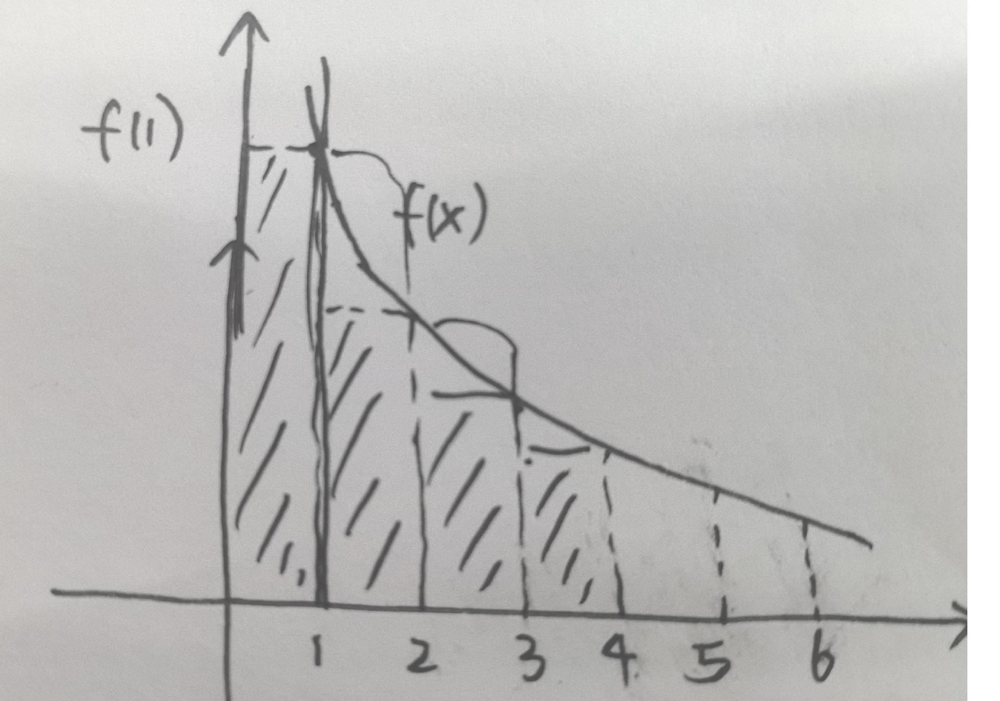
\(\int _{1}^{+\infty}f(x)<=\sum _1^{+\infty}f(x)<1+\int _1^{+\infty}f(x)\)
做题技巧 ：敛散性的判别法¶
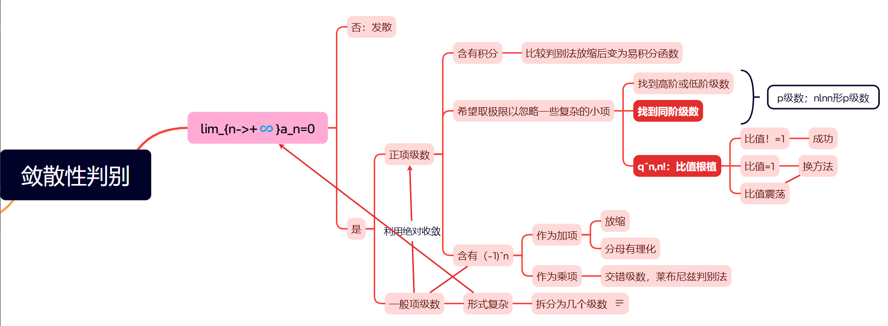
plus: x!比\(e^x\)更陡,有
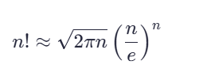
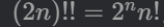
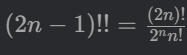
=\(\frac {(2n)!}{(2n)!!}\)
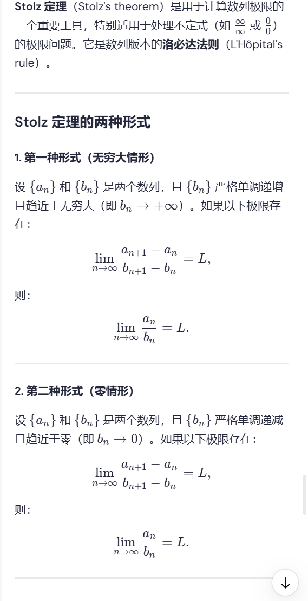
拓展定理：数列中的洛必达
一般项级数：出现了震荡的问题，怎么讨论是否收敛？¶
交错级数：¶
定义
-
莱布尼兹判别法
充分条件
误差\(|S-S_n|<=a_{n+1}\)
和\(S_n≤a_1\)
一般项级数¶
-
概念：
条件收敛
绝对收敛 收敛性非常好
-
绝对值判别法
转换到正项级数处理
-
绝对收敛级数的性质
-
重排性质
对于绝对收敛的级数，任何重排都保持==收敛==且==和相等==。
证明过程：先证明正项级数满足；在构造绝对收敛级数
（对于条件收敛级数，敛散性与和都可能发生变化【但在有限范围内调整顺序不影响】）
-
其他性质
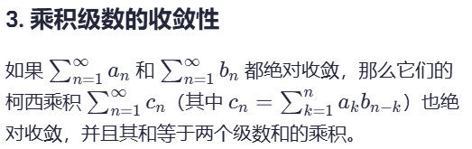
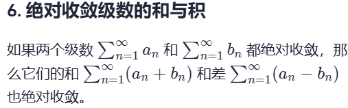
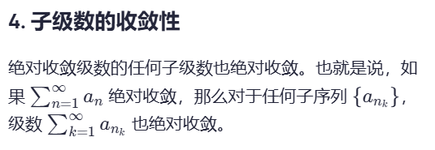
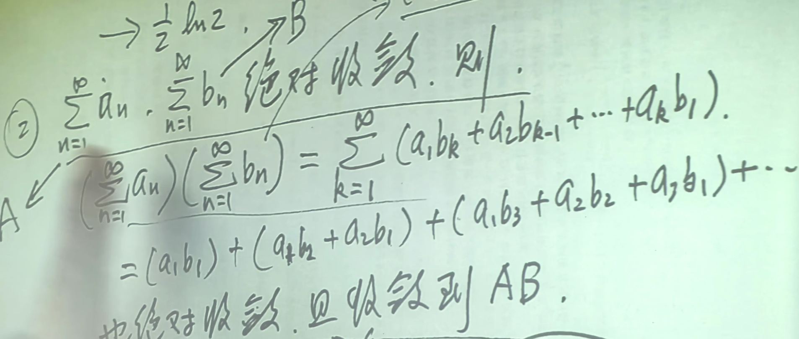
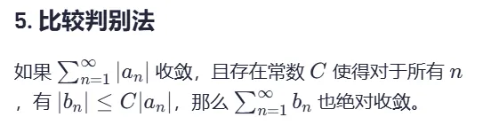
-
题目技巧:敛散性条件转化：¶
- 收敛→
- 柯西收敛
- \(\sum_{n=1}^{+\infty} a_n\)=\(\lim_{n \to +\infty} S_n\)=A
-
证明收敛←
根据柯西收敛准则，找N==（1.N要取整 2.可通过放缩等方法）==
-
证明发散←
很散：\(lim_{n→+\infty}a_n≠0\)
略散：柯西逆命题：\(\exists \epsilon > 0, \forall N >0,s.t n>N时，\exists p \in \mathbb{N}_+ ,,|S_{n+p}-S_n|>\epsilon\)，找到特定的ε即可
收敛+-收敛=收敛；收敛+-发散=发散；发散+-发散=不确定
函数项级数¶
幂级数：与几何级数的关系？有什么特殊性质？对理解级数整体的帮助？{性质特别好的函数项级数}¶
标准的几何级数是收敛半径为1的幂级数
取x=x0，则成为数项级数
-
概念
收敛点，发散点
-
收敛半径
半径内绝对收敛；半径外发散；半径上绝对收敛，条件收敛，发散都有可能
\(lim_{n→+\infty}|\frac{u_{n+1}(x)}{u_n(x)}|\)=\(l|x|\)=1时，x=r;或者根值判别法
-
收敛区间
开区间（-r,r）绝对收敛
-
收敛域
所有收敛点的集合
相比收敛区间价上了x=±r时收敛的点
-
-
阿贝尔定理
求收敛半径：比值，根植判别法
-
幂级数的和函数
-
定义和函数：
\(S(x) = \sum_{n=0}^{+\infty} a_n x^n\)
收敛的幂级数的值随x的变化
-
性质：
连续性：在收敛域内连续，可积
-
逐项可积性：
【积分求和号交换】
\(\int_a^b S(x)dx = \int_a^b \sum_{n=0}^{+\infty} a_n x^n dx = \sum_{n=0}^{+\infty} \int_a^b a_n x^n dx\)
-
逐项可导性：
【求导求和号交换】
\(S'(x) = (\sum_{n=0}^{+\infty} a_n x^n)' = \sum_{n=0}^{+\infty} (a_n x^n)' = \sum_{n=1}^{+\infty} n a_n x^{n-1}\)
-
-
作用：
- 求【和函数】
- 求收敛半径，进而确定级数的收敛域
- 正反向积分、求导
-
求级数和
将数项级数中的某项看做函数去特定值（e.g.2n看做xn）
求出和函数后带入特定值可得到和
-
近似计算
函数值：使通项<误差，得到对应n，选择合适的展开使n尽可能小
定积分：正常展开，利用幂函数逐项可积可导性
- 求【和函数】
-
-
函数的幂级数展开
\(f(x) = \sum_{n=0}^{\infty} \frac{f^{(n)}(a)}{n!} (x - a)^n\)
泰勒级数的唯一性
泰勒展开的系数\(a_n = \frac{f^{(n)}(x_0)}{n!}\) 在固定展开点 \(x_0\)时是唯一的。
但如果改变展开点\(x_0\),就会得到不同的泰勒级数,尽管它们最终都表示同一个函数。- 总思路1
- 是否能展开（要求在领域内任意阶可导）
- 怎么展开（\(a_n=\frac{f^{n}(x_0)}{n!}\)）
- 是否收敛到f(x)(泰勒定理:y余项为0：\(lim_{n->+\infty}R_n(x)=0\))
-
思路2
利用求导，积分，变换的关系与典型泰勒级数联系求解
- 总思路1
-
典型泰勒级数
| 函数 | 幂级数展开式 | 收敛区间 |
|---|---|---|
| 指数函数 | \(e^x = \sum_{n=0}^{\infty} \frac{x^n}{n!} = 1 + x + \frac{x^2}{2!} + \frac{x^3}{3!} + \cdots\) | \(\mathbb{R}\) |
| 自然对数 | \(\ln(1+x) = \sum_{n=1}^{\infty} (-1)^{n+1} \frac{x^n}{n} = x - \frac{x^2}{2} + \frac{x^3}{3} - \frac{x^4}{4} + \cdots\) | \(-1 < x \leq 1\) |
| 几何级数 | \(\frac{1}{1-x} = \sum_{n=0}^{\infty} x^n = 1 + x + x^2 + x^3 + \cdots\) | $ |
| 交错几何级数 | \(\frac{1}{1+x} = \sum_{n=0}^{\infty} (-1)^n x^n = 1 - x + x^2 - x^3 + \cdots\) | $ |
| 二项式 | \((1+x)^\alpha = \sum_{n=0}^{\infty} C^{\alpha}_{n} x^n = 1 + \alpha x + \frac{\alpha(\alpha-1)}{2!} x^2 + \cdots\) | $ |
| 反正切 | \(\arctan(x) = \sum_{n=0}^{\infty} (-1)^n \frac{x^{2n+1}}{2n+1} = x - \frac{x^3}{3} + \frac{x^5}{5} - \cdots\) | $ |
| 反正弦 | \(\arcsin x = x + \sum_{n=0}^\infty \frac{1}{2n+1} \frac{(2n-1)!!}{(2n)!!} x^{2n+1} = x + \frac{1}{6}x^3 + \frac{3}{40}x^5 + \cdots\) | $ |
| 正弦函数 | \(\sin(x) = \sum_{n=0}^{\infty} (-1)^n \frac{x^{2n+1}}{(2n+1)!} = x - \frac{x^3}{3!} + \frac{x^5}{5!} - \cdots\) | \(\mathbb{R}\) |
| 余弦函数 | \(\cos(x) = \sum_{n=0}^{\infty} (-1)^n \frac{x^{2n}}{(2n)!} = 1 - \frac{x^2}{2!} + \frac{x^4}{4!} - \cdots\) | \(\mathbb{R}\) |
| 双曲正弦 | \(\sinh(x) = \sum_{n=0}^{\infty} \frac{x^{2n+1}}{(2n+1)!} = x + \frac{x^3}{3!} + \frac{x^5}{5!} + \cdots\) | \(\mathbb{R}\) |
| 双曲余弦 | \(\cosh(x) = \sum_{n=0}^{\infty} \frac{x^{2n}}{(2n)!} = 1 + \frac{x^2}{2!} + \frac{x^4}{4!} + \cdots\) | \(\mathbb{R}\) |
| #### 做题技巧 |
求导降阶增系数，积分升阶减系数
-
典型变换：
-
系数在分子：积分
\(nx^{n-1}= (x^{n})'\)
\(n(n-1)x^{n-2} = (x^n)''\)
-
系数在分母：求导
-
三角级数，傅里叶级数¶
-
三角函数系的正交性
正交性：\(\int_a^b f(x)g(x) \, dx = 0\)则f(x), g(x) 在 [a,b]上正交
在[a,a+T]上，1，sinnwx,cosmwx正交
-
傅里叶展开：
\(f(x)\sim \frac{a_0}{2}+\sum_{n=1}^{+\infty} (a_n \cos nwx + b_n \sin nwx)\)
其中
\(a_0 = \frac{2}{T} \int_{-T/2}^{T/2} f(x) dx \quad\)
\(a_n = \frac{2}{T} \int_{-T/2}^{T/2} f(x) \cos nwx dx \quad (n=1,2,\dots)\)
\(b_n = \frac{2}{T} \int_{-T/2}^{T/2} f(x) \sin nwx dx \quad (n=1,2,\dots)\) -
奇偶延拓
若f(x)是奇函数，则\(f(x)\sim \frac{a_0}{2}+\sum_{n=1}^{+\infty} b_n \sin nwx\)，\(a_n\)=0
偶，cos，b_n=0
-
狄利克雷收敛定理
设\(f(x)\)是周期为\(2\pi\)的函数,且满足
(1)在一个周期内连续或只有有限个第一类间断点;
(2)在一个周期内只有有限个极值点,
则 f(x)的傅里叶级数收敛,且收敛于f(x)在点x处左、右极限的平均值只要函数f(x)在一个周期内至多有有限个第一类间断点,且不做无限次振荡,则在连续点处收敛于该点的函数值,在间断点处收敛于该点左、右极限的平均值
周期函数展开成傅里叶级数的条件要比函数展开成泰勒级数条件弱很多
-
拓展：傅里叶级数的优势
用三角多项式逼近周期函数，是最佳平方逼近
Dk = { \(U(x) = A_0/2+ Ancosnwx+Bnsinnwx\)}
Ao,An, Bn取傅里叶值时, \(\int_{-T/2}^{T/2}( f(x) - U(x) dx)^2\)取min满足：\(a_0^2/2+\sum_{n=1}^{+\infty}(a_n^2+b_n^2)<=\frac{2}{T}\int _{-T/2}^{T/2}f(x)^2dx\)
向量¶
乘法¶
加减法，数乘
-
点乘/数量积
基底
分量
投影
-
叉乘/向量积
-
运算律
反交换律
结合律
分配率
-
几何意义
四边形面积
-
三点共线
a✕b=0
-
-
混合积
（a✕b）c
-
运算律
轮转性
-
几何性质
混合积绝对值是平行四面体体积
-
三线共面，四点共面
混合积为0，即几何上的体积为0
-
坐标系¶
-
概念：
卦限
方向角，方向余弦
-
引入矩阵
\(a \times b = \begin{vmatrix} i & j & k \\ a_x & a_y & a_z \\ b_x & b_y & b_z \end{vmatrix}\)
\((a \times b) \cdot c =\)$
\begin{vmatrix} a_x & a_y & a_z \ b_x & b_y & b_z \ c_x & c_y & c_z \end{vmatrix}$ -
平面方程
平面与直线¶
-
平面方程 ↔三元一次方程
平面定义：垂直于法向量的所有向量终点的集合
点法式：\(A(x-x_0)+B(y-y_0) + C(z-z_0) = 0.\)
一般式:\(Ax + By + Cz + D = 0\)
截距式：\(\frac{x}{a} + \frac{y}{b} + \frac{z}{c} = 1\)
-
直线方程
直线定义：若满足某方程的点皆落在直线上，且直线上的点皆满足此方程，则此方程为直线方程
点向式/对称式：\(\frac{x-x_0}{u_x} = \frac{y-y_0}{u_y} = \frac{z-z_0}{u_z}\)
一般式：\(\begin{cases} A_1 x + B_1 y + C_1 z + D_1 = 0 \\ A_2 x + B_2 y + C_2 z + D_2 = 0 \end{cases}\)直线方向向量与两面法向量垂直
参数式：\(\begin{cases}x = x_0 + u_x t\\y = y_0 + u_y t \\z = z_0 + u_z t\end{cases}\)
-
平面束方程
\(\lambda (A_1x + B_1y + C_1z + D_1) + A_2x + B_2y + C_2z + D_2 = 0\)
-
点到平面距离公式
\(d = |\overrightarrow{P_0P_1} \cdot n^0|\)=\(\frac{|Ax_0 + By_0 + Cz_0 + D|}{\sqrt{A^2 + B^2 + C^2}}\)
面与面之间：\(\frac{|D_1-D_2|}{\sqrt{A^2 + B^2 + C^2}}\),将D理解为对平面的平移
-
点到直线距离公式
\(d=\frac{|\vec P_0P_1\times \vec n|}{|\vec P_0P_1|}\)
-
异面直线距离公式
\(d=\frac{|(\vec u\times \vec v)\vec {P_0P_1}|}{|\vec u\times \vec v|}\)
-
几何关系：
向量共线：对应坐标分量成比例
三点共线：\(\vec {AB}=k\vec BC\);\(\vec OC=k\vec OA+(1-k)\vec OB\)；向量叉乘为0
三线共面：\(\vec OC=k1\vec OA+k2\vec OB\);混合积为0
-
直线平面位置关系
本质是法向量的位置关系
-
平面与平面
看法向量关系
-
平面与直线
注意线与面的夹角与两向量夹角互余或互补
-
直线与直线
平行（重合）；相交；异面 //// 垂直
-
相交
\(\begin{cases} x_1 + t_1u_x = x_2 + t_2v_x, \\ y_1 + t_1u_y = y_2 + t_2v_y, \\ z_1 + t_1u_z = z_2 + t_2v_z, \end{cases}\)
-
异面
\((\vec u\times\vec v)\cdot \vec P_0P_1\neq 0\)【可用来判断两不平行的直线能否确定一个平面】
-
-
曲面与曲线¶
-
曲面方程
一般式
-
参数式
不唯一；曲面是二维的，它可以用==两个==独立的参数来描述。
如：球：
\(\begin{cases}x = x_0 + R \sin \varphi \cos \theta, \\y = y_0 + R \sin \varphi \sin \theta, \\z = z_0 + R \cos \varphi\end{cases}\)
-
-
曲线方程
-
一般式
两曲面方程联立
-
参数式
一个参数
-
-
旋转曲面
曲线绕直线轴旋转一周所得曲面
解法：旋转中直线长度不变\(x_0^2+y_0^2=x^2+y^2\)
-
柱面
直线沿曲线平行移动所生成的曲面
母线：该直线
准线：该曲线
投影柱面：曲线向平面投影形成的柱面（准线：曲线；母线：平面法向量方向）
解法：\(\vec{P_0P}//\vec u\),消去x0,y0,z0,留下x,y,z
投影曲线：曲线在一个平面上的投影（投影柱面与平面的交线）
特殊的：已知准线，要求平行于特定轴（z）的柱面，只要消去对应的变量（z）
任一不含变量z的方程f（x,y）=0必为母线平行于z轴的柱面 -
锥面
过定点的直线沿曲线运动
解法：\(\vec{AP}//\vec{AP_0}\)
顶点A：定点
母线：直线
准线：曲线
二次曲面¶
| 标准方程 | 曲面类型 | 说明 |
| \(\frac{x^2}{a^2} + \frac{y^2}{b^2} + \frac{z^2}{c^2} = 1\) | 椭球面 | |
| \(\frac{x^2}{a^2} + \frac{y^2}{b^2} - \frac{z^2}{c^2} = 1\) | 单叶双曲面 | 直纹面 |
| \(\frac{x^2}{a^2} - \frac{y^2}{b^2} - \frac{z^2}{c^2} = 1\) | 双叶双曲面 | |
| \(\frac{x^2}{a^2} + \frac{y^2}{b^2} = 2z\) | 椭圆抛物面 | 若a=b,则称为旋转抛物面 |
| \(\frac{x^2}{a^2} - \frac{y^2}{b^2} = 2z\) | 双曲抛物面（马鞍面） | 马鞍面，直纹面，一条抛物线沿另一条抛物线运动形成的面 |
| \(\frac{x^2}{a^2} + \frac{y^2}{b^2} - \frac{z^2}{c^2} = 0\) | 椭圆锥面 | |
| \(\frac{x^2}{a^2} + \frac{y^2}{b^2} = 1\) | 圆柱面（椭圆柱面） | 证明：直线\(x/a=z/b\),绕z轴旋转，\(\sqrt{x^2+y^2}/a=z/b\) |
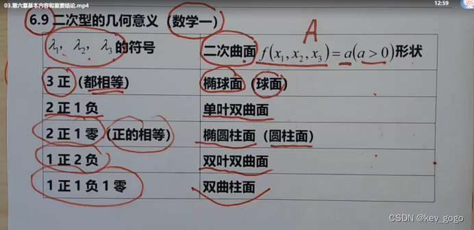
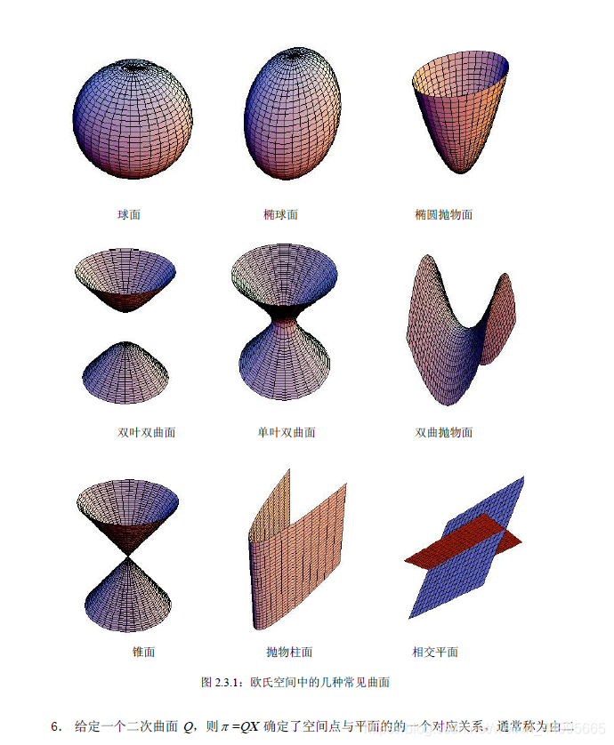
多元函数¶
概念¶
\(\delta\)邻域\(U(P0,\delta )\)
平面点集¶
内点：$\exists
$\(P0\)的邻域U(\(P0,\delta\))完全该集合D内
外点：\(P0\)邻域中所有点都不在D内
边界点：\(P_0\)邻域中点有在D外也有在D内
内部：内点组成的集合int D
边界：界点的集合\(\partial D\)
可知：点集D的内点属于D，外点不属于D，而界点可能属于D.也可能不属于D（例子：取集合为11正方形中有理数点）
将开闭区间概念拓展到多维：
开集：集合中所有点都是内点，\(D=int D\)（plus：空集是开集）
闭集：补集为开集
描述集合**在空间中的范围是否有限:
有界集：所有点都能被坐标原点的邻域包含\(D\subset U(O,R)\),几何上：集合\(S \subset R^2\)有界,如果存在 \(M > 0\),使得对于所有 \((x, y) \in S\)都有\(\sqrt{x^2+ y^2} \leq M\)
无界集
多元函数¶
场的概念/三维空间中曲面
二元函数的极限¶
-
\(\epsilon-\delta\)定义
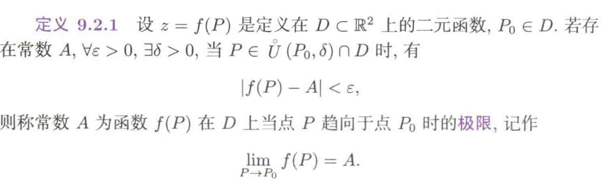
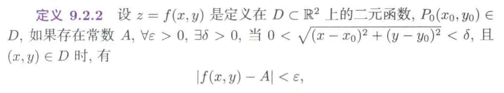
-
极限存在↔沿任意路径极限存在且相等
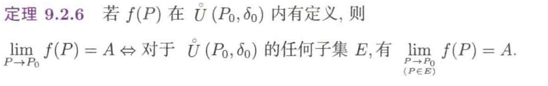
⇒若沿两条路径极限不相等，则二元函数极限不存在
若极限不存在，式子的值取决于沿什么方向趋近（\(x_0，y_0\)）
二元函数连续性¶
概念¶
全增量：\(\Delta z=f(x,y)-f(x0,y0)\),其中x=\(x0+\Delta x\)
关于x的偏增量：\(\Delta z_{x}=f(x,y0)-f(x0,y_0)\)
定义¶
\(\lim_{(x,y) \rightarrow (x0,y0)} f(x,y) = f(x0,y_0)\)
性质¶
若f(x,y)在\((x0,y0)\)连续=⇒则\(f(x,y0)\)在\(x=x0\)连续
【函数\(f(x, y)\)在\((x0, y0)\)连续意味着它沿着任何路径(包括y = y0)都连续。因此,f(x,y0) 在x = x_0处连续】
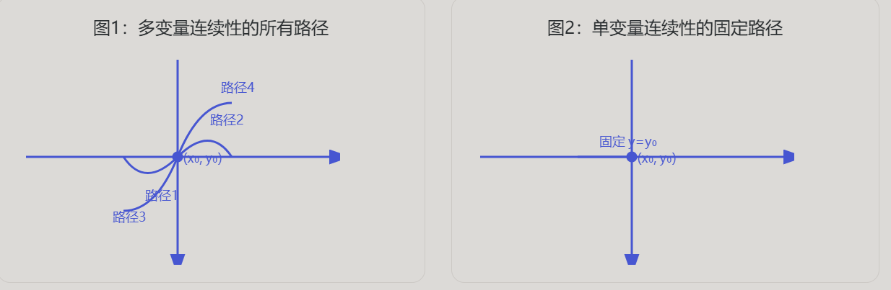
极限\(lim{(x,y)\rightarrow(x0,y0)}\)与二次极限\(lim{x\rightarrow x0}lim{y\rightarrow y_0}\)毫无关联,二次极限不是二重极限的特殊路径逻辑误区：混淆“路径趋近”与“分步取极限”【y→y_0时x不是固定不变的】
偏导数¶
几何意义：与变量坐标轴平行的切线的斜率（e.g \(f_x’(1,2)\)为（1,2）处平行x轴的切线斜率）
表示方法：
- 先带入确定的y，化为只与x有关的函数，求导赋值
- 定义法转化为极限求解
- 将y视为常量但不赋值（仍为字母），求导，赋值
可偏导与连续的关系¶
可偏导不一定连续：只是某一特定路径连续
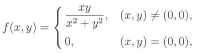
（该函数不可微）
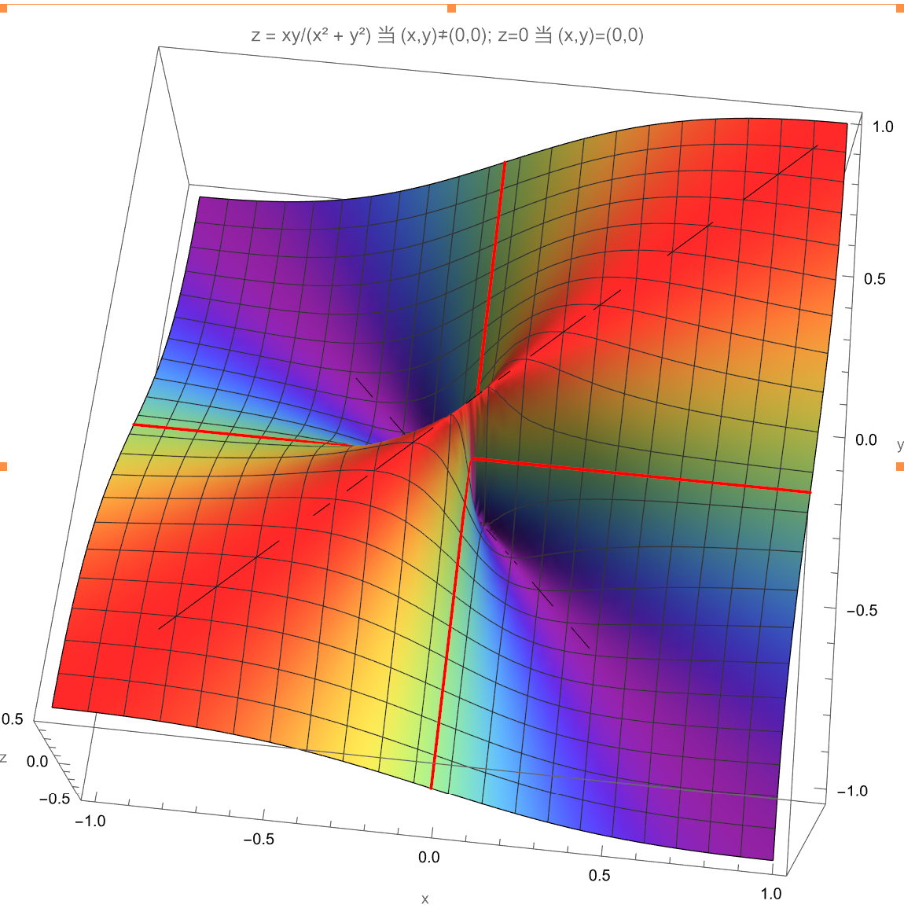
连续不一定可偏导：尖点|x|+|y|(x,y)→(0,0)
^cab5ce
高阶偏导数¶
u(x,y)具有二阶连续偏导数，即\(f_{xy}'',\)$
f_{yx}''\(连续⇒\)f_{xy}''=f_{yx}''$
【体现了函数光滑性】
复合函数偏导数¶
条件
外偏导\(f_x',f _{y}'\)连续，更准确的说是\(f在P_0可微\)
内偏导\(\partial u/\partial x\)等存在
链式法则：\(\frac{\partial z}{\partial x} = \frac{\partial z}{\partial u} \cdot \frac{\partial u}{\partial x} + \frac{\partial z}{\partial v} \cdot \frac{\partial v}{\partial x}\)
通过画变量图，直观简化过程
深化理解：注意等式左边的偏导是以x为自变量求偏导【即视y为常量】
而：右边偏导视u（若U=x，则形式上为x）为中间变量【即视v为常量】
Important
-
莱布尼兹法则（含积分）上下限
\(I(x) = \int_{a(x)}^{b(x)} g(t)dt\)
\(\frac{dI}{dx} = g(b(x)) \cdot b'(x) - g(a(x)) \cdot a'(x)\)
全微分¶
可微条件：对充分小的\(\Delta x,\Delta y\),都有\(\Delta z=A\Delta x+B\Delta y+o(\rho)\),\(\rho\to{0}\)
本质：函数在某点附近可以用一个线性映射（即线性函数）来很好地近似
在极限下，函数的增量与自变量增量之间的对应关系是线性的，这个线性映射就是函数的微分（梯度向量）。 ^f98fa4
\(\Delta z=f_x'\Delta x+f_y'\Delta y+o(\rho)\),其中\(\rho=\sqrt{(\Delta x)^2+(\Delta y)^2}\)
只要证：
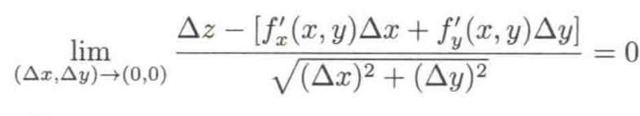
有：全微分\(dz = \frac{\partial z}{\partial x}dx + \frac{\partial z}{\partial y}dy\)
隐函数求偏导\(F(x_1,x_2,…，x_n)\)=0¶
【要有清晰的谁是变量谁不是变量的观念】¶
-
二元：\(F(x,y)=0\)
-
条件：
函数在以\(P_0\)为内点的区域D上连续
在D内存在连续的偏导数\(F_x'\),\(F_y'\)
\(F(x_0,y_0)=0\)
\(F_y'(x_0,y_0)\neq0\)
-
推导(利用全微分展开)
\(dF=\frac{\partial f}{\partial x }dx+\frac{\partial f}{\partial y }dy\)=\(F_x'dx+F_y'dy\)=0
\(\frac {dy}{dx}=-\frac{F_x'}{F_y'}\)
-
-
三元：\(F(x,y,z)=0\)
-
条件
函数在以\(P_0\)为内点的区域D上连续
在D内存在连续的偏导数\(F_x'\),\(F_y'\),\(F_z'\)
\(F(x_0,y_0,z_0)=0\)
\(F_z'(x_0,y_0,z_0)\neq0\)
-
推导
\(dF=F_x'dx+F_y'dy+F_z'dz\)=0
\(\frac {\partial z}{\partial x}=-\frac{F_x'}{F_z'}\)
注：求\(F_x',F_y'\)时，其余变量视作恒量，包括z
-
-
四元二方程
-
条件
函数在邻域内连续
导函数均存在
\(F(P_0)=G(P_0)=0\)
雅可比行列式$J=\frac{\partial(F, G)}{\partial(u, v)}=
$\(\begin{vmatrix} F'_u & F'_v \\ G'_u & G'_v \end{vmatrix} \neq 0\)
\(\frac{\partial u}{\partial x} = -\frac{1}{J} \cdot \frac{\partial(F, G)}{\partial(x, v)}\)=\(-\frac{\partial(F, G)}{\partial(x, v)}/\frac{\partial(F, G)}{\partial(u, v)}\)
-
Important
-
一阶全微分形式不变性
\(dz=\frac{\partial z}{\partial u}du + \frac{\partial z}{\partial v}dv\)
用处：
对变量关系复杂的方程，不需要搞清各变量之间的自变量因变量关系，直接两端作用全微分，即可得到dx，dy等之间关系。无论变量是自变量还是因变量，微分的代数形式（表达式）保持不变。
e.g.对\(z^2\)微分得到2zdz,其中 dz 已经隐含了z对x,y的依赖关系。
允许我们直接对等式两边求微分，而无需显式区分变量角色，因为微分运算会自动处理依赖关系（通过链式法则）
这时，利用全微分展开式：\(dz=Adx+Bdy=F_x’dx+F_y’dy\),即可求得\(F_x’=A\)……
优势：一口气求出所有偏导数；变量越多，变量关系越复杂，优越性越大
【可知：对等式两端求微分，求偏导都是可行的的方法】
泰勒展开¶
\(\Delta x=x-x_0\),\(\Delta y=y-y_0\)
\(f(x,y)=f(x_0,y_0)+(\frac {\partial}{\partial x}\Delta x+\frac {\partial}{\partial y}\Delta y)f(x_0,y_0)+\frac{1}{2!}(\frac {\partial}{\partial x}\Delta x+\frac {\partial}{\partial y}\Delta y)^2f(x_0,y_0)+...+R_n(x,y)\)
\(R_n(x,y)=\frac{1}{(n+1)!}(\frac {\partial}{\partial x}\Delta x+\frac {\partial}{\partial y}\Delta y)^{n+1}f(x_0+\theta \Delta x,y_0+\theta \Delta y)\)
【⚠️：\(\theta 在f中，并不存在于\Delta x,\Delta y 上\)】
其中\((\frac {\partial}{\partial x}\Delta x+\frac {\partial}{\partial y}\Delta y)f(x_0,y_0)=f_{x}'|_{x=x_{0}}\Delta x+f_{y}'|_{y=y_{0}}\Delta y\)
\((\frac {\partial}{\partial x}\Delta x+\frac {\partial}{\partial y}\Delta y)^2f(x_0,y_0)=\)==\(\frac {\partial ^2f}{\partial x^2}|_{x=x_0,y=y_0}(\Delta x)^2+2\frac {\partial ^2f}{\partial x \partial y}|_{x=x_0,y=y_0}\Delta x \Delta y+\frac {\partial ^2f}{\partial y^2}|_{x=x_0,y=y_0}(\Delta y)^2=\)$
f_{xx}''|{x=x_0,y=y_0}(\Delta x)^2+2f''(\Delta y)^2$}''\Delta x\Delta y+f_{yy
极值¶
- 定义：
有定义的领域内的最值
【如果函数在 (a,b) 的某些路径上无定义，但在其他路径上有定义，极值的定义仍然可以成立，但需要明确限制在函数有定义的区域内。】
结论：
若某点是极值且可偏导，则所有偏导数为0
二元函数 如何找极值：
1. 在驻点（所有偏导数均为0）处或偏导数不存在的地方取到
2. 若是驻点，有结论：
$A=f_{xx}''
$\(B=f_{xy}''\),\(C=f_{yy}''\)
- \(B^2-AC<0\):\(A>0\)极小值【可以类比一阶导数>0】
- A<0:极大值
- A=0,该情况不存在，因为\(B^2<0\)不成立
- \(B^2-AC=0\)不一定
条件极值¶
概念
约束条件\(G(x1...xn)=0\)条件下求\(F(x1...xn)\)的极值
几何意义理解:
F是一个曲面,G是母线垂直于z轴的柱面,求柱面与曲面交线的极值
由此可推出:
条件极值点不一定是F的驻点
F在交线上(满足G=0)的驻点一定是条件极值点[任意路径都成立则特殊路径也成立]
求条件极值:拉格朗日乘数法
推导
将y试作x的函数y(x)
隐函数存在定理
隐函数定理指出,如果\(f(x, y)\)在某点\((a, b)\) 处满足:
•\(f(a, b) = 0\),
• f在该点附近连续可微,
• 偏导数\(\frac{\partial f}{\partial y} \neq 0\)
那么可以局部地将 y表示为x的函数y=g(x)
则\(g'(x,y(x))=gx'+gy'y'=0\)[复合函数链式法则]
\(h(x)=f(x,y(x))\),由充分条件知\(h(x)'=0\)
记\(λ=-\frac {fy'}{gy'}\)
得到：
\(\begin{cases}f'x(x0, y0) + \lambda g'x(x0, y0) = 0, \\f'y(x0, y0) + \lambda g'y(x0, y0) = 0, \\g(x0, y0) = 0.\end{cases}\)
引入新函数\(L(x,y,\lambda)=F(x,y)+\lambda G(x,y)\)
\(\frac {\partial L}{\partial x}=\frac {\partial L}{\partial y}=\frac {\partial L}{\partial \lambda }=0\)
所以：将F在G的条件下的条件极值转化为L的非条件极值
由于是必要条件，故还需验证求出的点是否是极值点（实际做题中不必要）
向量函数¶
定义：\(\vec F=(f_1,f_2,...,f_n)\) =\(f_1\vec i+f_2 \vec j+f_3\vec k+\cdots\)函数值是向量的函数
向量函数的导数\(\vec F'=f1' \vec s+f2' \vec j+f_3' \vec k+\cdots\)是切向量，指向增加的方向
由此可推:
曲线的切线与法平面方程¶
| 对象 | 几何要素 | 方程表达式 | 备注 |
|---|---|---|---|
| 曲线 | 切线 | 若参数方程为 \(\mathbf{r}(t)\)，切线方向为 \(\mathbf{r}'(t_0)\) | 通过点 \(\mathbf{r}(t_0)\)，方向向量 \(\mathbf{r}'(t_0)\) |
| 法平面 | 法平面法向量为曲线切线方向 \(\mathbf{r}'(t_0)\) | 通过点 \(\mathbf{r}(t_0)\)，平面法向量为切线方向向量 | |
| 曲面 | 法线 | 若隐函数为 \(F(x,y,z)=0\)，则法线方向为梯度 \(\nabla F = \left(\frac{\partial F}{\partial x}, \frac{\partial F}{\partial y}, \frac{\partial F}{\partial z}\right)\) | 方向向量即为法线方向 |
| 切平面 | 切平面方程为 \(\nabla F \cdot (x - x_0, y - y_0, z - z_0) = 0\) | $ (x_0,y_0,z_0) $ 为曲面上一点， \(\nabla F\) 是点处梯度 | |
| ### 曲面的切平面与法线 |
- 先定义切平面\(\Pi\)：
- S上过P点任意一条光滑曲线的切线皆落在\(\Pi\)内
- 定义等值面\(F(x,y,z)=0\),我们所画的曲面其实都是等值面，求曲线的切平面本质是求等值面的切平面
- 求切平面： ^45ac9e
- 证明：
- 令\(x=x(t),\cdots\)
- 则\(F'=F_x'x(t)'+F_y'y(t')+F_z'z(t)'\)=\((F_x',F_y',F_z')(x',y',z')\)
- 所以(x',y',z')与切向量垂直，是法向量
- \(\vec n= (x',y',z')\)
- 推得法线与切平面方程
- 证明：
数量场和向量场¶
| 项目 | 数量场 (Scalar Field) | 向量场 (Vector Field) | 向量函数 (Vector Function) |
|---|---|---|---|
| 定义 | 数量场就是一个定义在空间上的函数，函数的“输入”是空间坐标，输出是该点对应的数值。 | 空间中每一点对应一个向量值的函数 | 给定一个参数（标量或向量），输出一个向量 |
| 输入变量 | 位置向量 | 位置向量 | 标量或向量，例如时间或空间坐标 |
| 输出值类型 | 标量 | 向量 | 向量 |
| 映射关系 | f: R^n → R | F: R^n → R^m (通常 m=n，如 R3→R3) | V: R^m → R^n |
| 维度关系 | 空间→标量 | 空间→向量（常见空间3维） | 参数空间→向量空间 |
| 实例 | 温度场ϕ(x,y,z)，数量场为定值叫做等值线 | 重力场g(x,y,z)、电场E(x,y,z) | 时间参数t→速度v(t)，曲线参数→切向量 |
| 联系 | 都是场的概念，描述空间中的函数分布 | 向量场是一种特殊的向量函数，参数是空间点 | 向量场是向量函数在空间上的特例，也是参数空间的函数 |
方向导数¶
- 定义：
- 本身是一个标量
- 对f:\(R^n\subset D \rightarrow R\)(数量场)
- 对于过P沿\(\vec u\)的射线L上一点Q
- 若\(I=lim_{n\rightarrow+\infty}\frac {f(P)-f(Q)}{|PQ|}\)存在,则f在P沿\(\vec u\)方向导数存在，记为\(\frac {\partial f}{\partial u}|_{P}\)或\(f'(P,\vec u)\)
- 联系
- （x/y方向)正负两个方向导数存在且互为相反数<->可偏导
- 任意方向方向导数存在<-不可互推->连续【所有方向导数存在只包括了直线路径】
- 若函数 f(x,y,z)在点 M可微->则f在点M处沿任何方向的方向导数均存在
- 计算
- 若函数在改点可微，则沿任何方向的方向导数都存在，且：
- \({\frac{\partial f}{\partial u}}=f_{x}^{\prime}(M_{\scriptscriptstyle0})\cos\alpha+f_{y}^{\prime}(M_{\scriptscriptstyle0})\cos\beta+f_{z}^{\prime}(M_{\scriptscriptstyle0})\cos\gamma.\)
梯度¶
- 引出梯度的概念：
- \(\frac {\partial f}{\partial u}=(f_{x}'(M),f_{y}'(M),f_{z}'(M))*\vec{u}\)¶
- \(\therefore \frac{\partial f}{\partial u}=\vec{ n}*\vec{ u}=|\vec{n}||\vec{ u}|\cos\theta=|\vec{ n}|\cos\theta\)
- 显然当：\(\vec{ u}//\vec{n}\)时，沿平面法向量方向，方向导数最大
取这个平面法向量的方向为梯度\(\nabla\!f(P)={\big(}f_{x}^{\prime}(x,y,z),\ f_{y}^{\prime}(x,y,z),\ f_{z}^{\prime}(x,y,z){\big)}.\)
- 有性质：
- 数量场f在P点沿梯度方向的方向导数最大，其最大值为梯度的模
- 等值面 F(x,y,z)=C在P点的梯度方向即为曲面的法向.
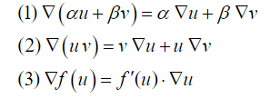
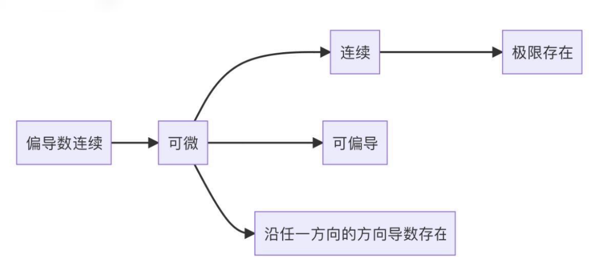
可微的本质就是：方向导数(标量)=梯度（向量） \(\cdot\) 方向向量= \((f_{x}',f_{y}',f_{z}')(\cos\alpha,\cos\beta,\cos\gamma)=f_{x}'\cos\alpha+f'_{y}\cos\beta+f'_{z}\cos{\gamma}\)
即：方向导数是方向向量的线性函数
做题¶
【要有清晰的谁是变量谁不是变量的观念】¶
对于具体赋值了的问题，最好在解题过程中就完成赋值，降低计算量
重积分¶
二重积分¶
定义，适用范围¶
求曲顶柱体面积
过程¶
- 分割：将D分割为D_i
- 近似：当区域D的直径\(d(D)=\sup_{P,Q\in D}\{|PQ|\})\)很小时，对\((\xi_i,\eta_i)\in D_i\),\(V_i=f(\xi_i,\eta_i)A(D_i)\)
- 求和：\(V=\sum_{i=1}^nV_i\)=\(\sum_{i=1}^nf(\xi_i,\eta_i)A(D_i)\)
- 取极限：取\(d=max(d(D_i))\rightarrow 0\),则\(V=lim_{d\rightarrow 0}\sum_{i=1}^nf(\xi_i,\eta_i)A(D_i)\)
若可积，则对\(\forall d,\forall \xi ,\eta,\int \int_D f(x,y)dxdy=lim_{d\rightarrow 0}\sum_{i=1}^nf(\xi_i,\eta_i)A(D_i)\)
可积条件*¶
- 先证明矩形区域的可积性
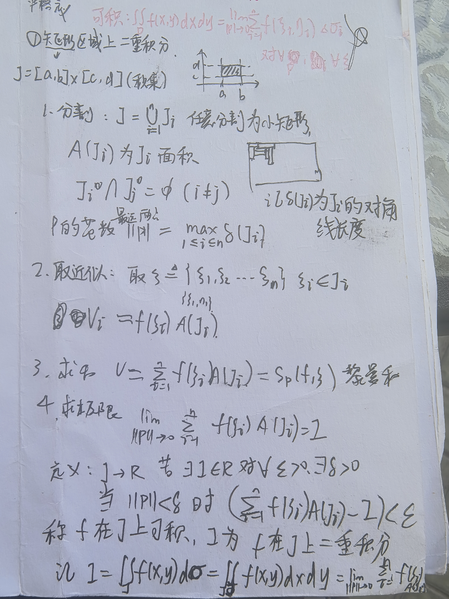
- 定义零面积集：可用可数个小矩形覆盖的集合【一个集合可以被任意小的“覆盖”所包围】
- 有限点集，有限闭区间上的连续曲线上的点都是零面积集
- 可得结论：若f 上不连续的点为零面积集，则f在J上可积【本质：连续点一定可积 + 不连续点没有面积 → 整体可积】
- 对于非矩形区域，用矩形围住并构造新函数
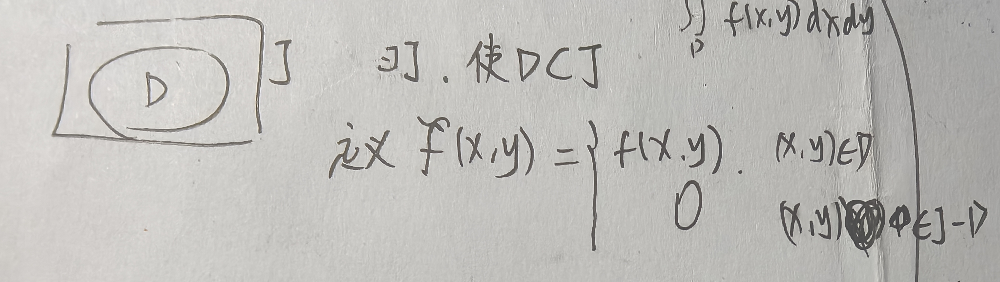
- 若f'在J上可积，则f在D上可积，且两个二重积分大小相等
- f在D上可积<->f'在J上可积<->J中非连续点为零面积集<->D中非连续点+D中边界点为零面积集
- (J中非连续点=D中非连续点+D的边界点)
- 结论：f在D上的非连续点+D的边界点的集合为零面积集，则f在D上可积
- 对比：一元函数：有限个间断点（不连续点）->f可积【区别：考虑边界点】
- 推广：
- 取f=1,【1在D内无非连续点】
- 有结论：1在D上可积<->D是可求面积的<->\(\partial D\)为零面积集
- 再特殊： 设 \(( D = {(x,y) \in \mathbb{R}^2 \mid a \le x \le b, \varphi_1(x) \le y \le \varphi_2(x)} )\)，其中 \((\varphi_1(x), \varphi_2(x))\)在 ([a,b]) 上连续。如果 f 在 D 上连续，则 f 在 D可积
Afterall，以上内容本质上都是不够严谨的直观理解，实际上：
1. 累次积分的推导基础是测度论（量的分割），不必局限单纯几何“垂直微元”
- 累次积分本质基于Fubini定理，它保证只要积分函数符合可积条件，积分区域按变量分割的“测度乘积”结构是有效的。
- 这时，变量是否正交垂直反而不重要，重要的是变量空间的“测度能以乘积形式表达”，即区域上的面积／体积微元对应的测度可分解成变量的乘积测度。
【dx,dy准确上不应理解为垂直的】
2. dxdy 【不能简单理解为常规意义上的“乘法”】，而是外微分形式的楔积（wedge product），用记号写是 dx∧dy
- 比如在变量替换中：
-
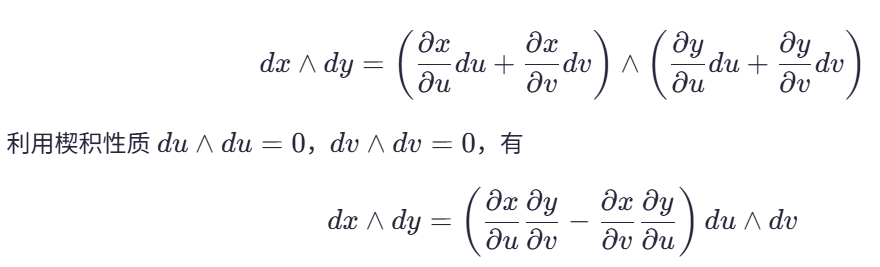
- dxdy = dx ^ dy = J du ^ dv
性质¶
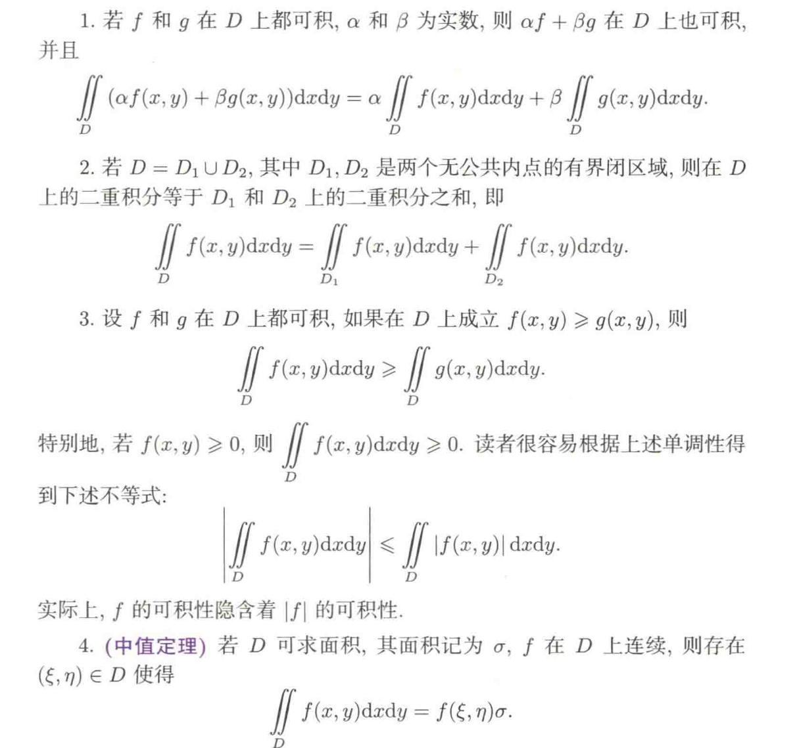
注意对f奇偶性，对称性（比如关于y=x对称)的运用
计算¶
累次积分¶
- 适用范围：x型区域（边界为x=a,x=b的区域），y型区域
-
做法
- 先取x或y作为后积分的量，放在外层
- 垂直于该轴（x或y），做一个与坐标轴同向的箭头，从积分下限指向积分上限，放在积分号内层
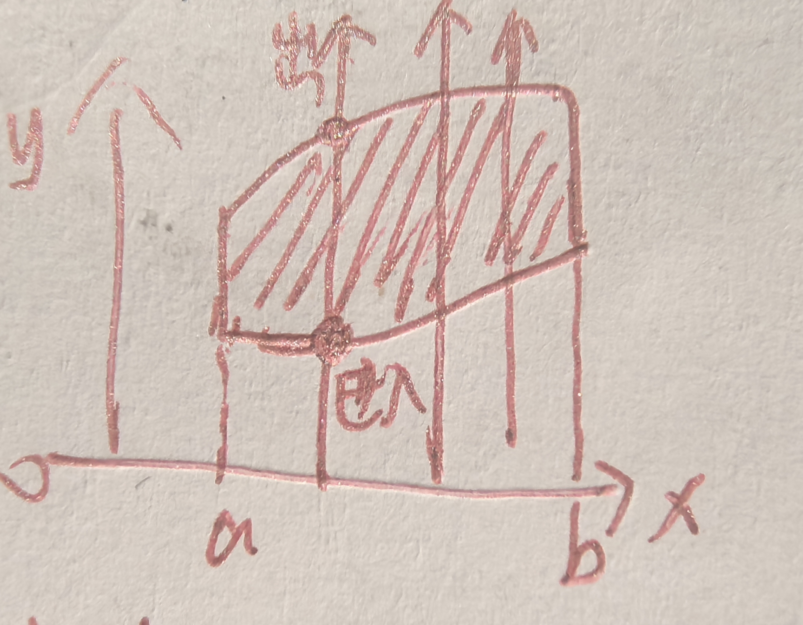
-
对于三角形区域，既可以看作x型区域，也可以看作y型区域，选择容易计算【能否求解，计算量如何】的一种看法计算。
换元法¶
dxdy = dx ^ dy = J du ^ dv
\(\iint_D f(x, y) dxdy = \iint_{D'} f(x(u, v), y(u, v)) \left| \frac{\partial (x, y)}{\partial (u, v)} \right| dudv.\)
对极坐标：dxdy=rdrdθ
三重积分¶
定义与意义¶
设物体V 的密度为 f (x,y,z)，如何求此物体的质量？
分割，近似，求和，取极限
可积条件*¶
f'在J上可积<->f在V上可积<->f在V上的不连续点与\(\partial V\)的并集为零面积集
1在V上可积<->V是可求体积的<->V分片光滑即\(\partial V\)为零面积集
| 条件类型 | 具体要求 |
|---|---|
| 被积函数 | 有界，连续或仅有限个间断点；Lebesgue可测且绝对可积 |
| 积分区域 | 有界且可测 |
| 结论 | 符合上述条件则三重积分存在且有限 |
| ### 计算 | |
| #### 累次积分 | |
| ##### 投影法【薯条】 |
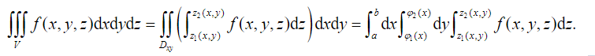
平面截割法【薯片】¶
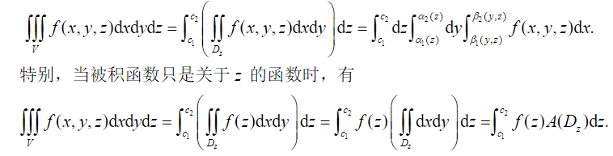
注意：这种特殊情况是薯片积分的最常用应用场景：将一个二重积分转化为其几何意义——一个简单的求面积问题
变量替换¶
一般变量替换¶
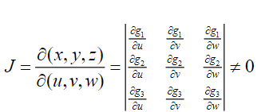
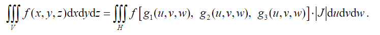
柱面坐标变换¶
\(x=r\cos\theta,y=r\sin\theta,z=z\)
J=r
\({rdr d\theta dz}\)
有可能使三个变量独立
\(\theta\)大概率与另外两个变量无关
几何理解：¶
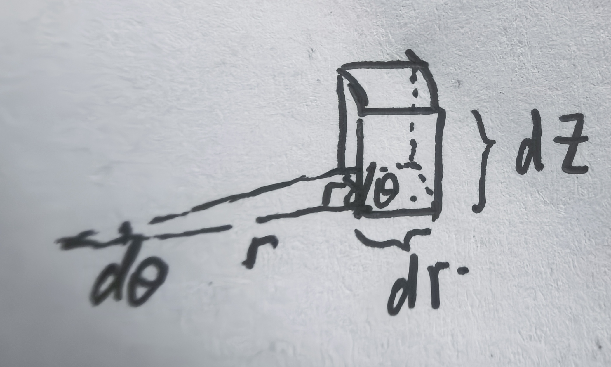
球面坐标变换¶
\(x=\rho \sin \phi \cos\theta,y=\rho \sin\phi \sin\theta,z=\rho \cos\phi\),\(\rho\geq{0},\pi\geq\phi\geq 0,2\pi\geq\theta\geq 0\)
\(J=\rho^2\sin\phi\)
几何理解：¶
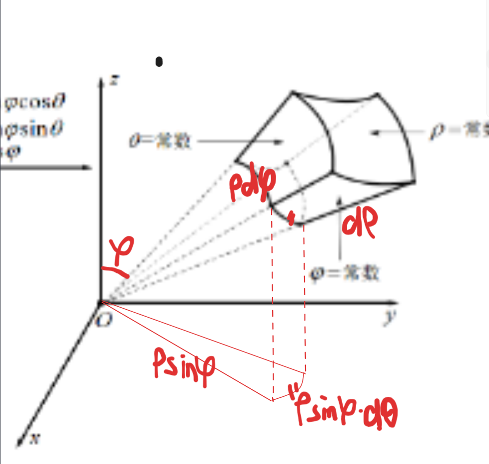
注意\(\rho \sin\phi d\theta\)这条长度的投影步骤
曲线积分¶
曲线表示¶
- 参数曲线
- 参数表示不唯一
- 如何选择好的参数表示：
- 有几何意义
- 表达式简洁
- 参数表示的等价性：
- 小对小，打对大【方向一致】
- 边界
- 通过中介函数对应
弧长¶
-
先给一些定义：
连续曲线：三个分量在定义域上连续
光滑曲线：三个分量在定义域上连续且各自的导函数连续（且不同为0）【若x(t),y,z导函数都为0，则切向量为0， -
求弧长：
-
可求长的条件：
两点之间插入一点，分为2n段，随着分点加密，式子单调增。只要要求求和有上界，则”可求长“
有限闭区间上的连续曲线一定可求长 -
求长证明：
- 【可以理解为二维弧长计算公式的推广】：
曲线：\(\alpha=x(t)\vec{i}+y(t)\vec{j}+z(t)\vec{k}\)
\(L=\sum_{i=1}^{n}\sqrt{[x(t_i)-x(t_{i-1})]^2+[y(t_i)-y(t_{i-1})]^2+[z(t_i)-z(t_{i-1})]^2}= \sum_{i=1}^n\sqrt{ x'(\phi)^2+y'(\alpha)^2+{z}'(\beta)^2 }\Delta t\)
可证\(t=\alpha=\beta=\phi\)
\(\therefore L=\sum_{i=1}^n\sqrt{ x'(t)^2+y'(t)^2+z'(t)^2 }\Delta t\)
结论：\(\therefore L=\int_{a}^b|\alpha'(t)|dt=\int_{a}^b\sqrt{ x'(t)^2+y'(t)^2+z'(t)^2 }dt\)
- 【可以理解为二维弧长计算公式的推广】：
-
另：\(\because d\vec{l}=(x',y',z')dt=(dx,dy,dz)=(x',y',z')dt=\alpha'(t)dt=|\vec{\alpha}'(t)|\vec{\alpha^{0}}dt=\vec{\alpha^{0}}dl\)
\(dl=|\alpha'(t)|dt\)
\(\therefore d\vec{l}=\alpha'(t)dt=\vec{\alpha_{0}}dl=(\cos\alpha,\cos\beta,\cos \gamma)dl\)
’有限闭区间上的连续曲线一定可求长‘
弧长微分：
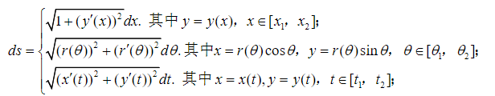
第一类曲线积分(弧长积分)¶
应用场景：¶
数量场【比如看成密度场】在曲线上随位置分布。比如求密度关于x,y,z的曲线的质量
公式：¶
$$
\int_{C} f(x, y, z) ds = \int_{a}^{b} f(x, y, z)|\alpha'(t)| dt = \int_{a}^{b} f[x(t), y(t), z(t)]\sqrt{[x'(t)]^2 + [y'(t)]^2 + [z'(t)]^2} dt
$$
可以理解为速度乘时间，积累起来就是弧长
注意积分从小的积分到大的；积分上限大于积分下限
优势是可以利用曲线方程对函数化简
性质：¶
弧长积分的值与曲线的走向（从端点 A 到端点 B，还是从端点 B 到端点 A）无关，（参数范围）积分上限大于积分下限 .
优势是可以利用曲线方程对函数化简
第二类曲线积分¶
应用场景：¶
向量场定义在曲线C上，如质点在\(\vec{ F}\)作用下沿曲线C从A移动到B所做的功
公式：¶
\(\int_{c}\vec{F}{d}\vec{\alpha}=\vec{ F}\vec{\alpha}'(t)dt=[Px'(t)+Qy'(t)+Rz'(t)]dt\)（注意，有时\(d\alpha\)不加向量符号，也是指向量微分元
注意符号\(\int _c\)
与第一类曲线积分关系¶
\(\int_{c}\vec{F}d\alpha=\int_{c}\vec{F}\alpha'(t)dt=\int_{c}\vec{F}|\alpha'(t)|\vec{\alpha^0}dt=\int_{c}(\vec{ F}\vec{\alpha^0})|\alpha'(t)|dt=\int_{c}(\vec{F}\vec{\alpha}^0)dl\)
通过提取出\(\vec{\alpha^0}\),将第二类转化为第一类
性质¶
- 反向
- 线性
- 区域可加性\(\int_{C} \vec{F} \cdot d \alpha=\int_{C_{1}} \vec{F} \cdot d \alpha_{1}+\int_{C_{2}} \vec{F} \cdot d \alpha_{2}\)
- 参数表示等价
注意：大小关系不成立（向量无法比大小）慎用对称性
【对称性】：当积分曲线是闭曲线时，曲线在坐标轴上投影来回走两次。若函数关于投影轴是偶函数，则第二类曲线积分为0，比如\(\int_{一圈}(1-x^2)dx\)
格林公式¶
条件：P,Q为连续且有连续一阶偏导数【注意分母为0的情况】
\(\iint_D (\frac{\partial Q}{\partial x}-\frac{\partial P}{\partial y})dxdy=\oint_C P dx + Q dy\). 其中C 取正向（逆时针）右手定则 【注意方向】
^2zdids
应用¶
一般，第二类曲线积分运算较二重积分更为容易，不需要格林公式
当曲线积分运算困难时，可用格林公式转化为二重积分
同样，对于特殊的二重积分也可以转化为曲线积分
比如：系数为1的（求区域面积）\(\iint dxdy=\iint(1-0)dxdy=\int-ydx=\int xdy=\int\frac{1}{2}(xdy-ydx)\)
判别保守场【格林公式的特殊】¶
路径无关性
势函数存在性\(\nabla \varphi(\vec{x}) = f(\vec{x}), \vec{x} = (x_1, x_2, \cdots, x_n)\)
必要条件：\(\frac{\partial f_{i}}{\partial x_{j}}=\frac{\partial f_{j}}{\partial x_{i}}\) ^gqllii
拓展到充要条件：¶
定义凸集:任意两点连线在区域内
集合为凸集（甚至拓展到单联通区域），则\(\frac{\partial f_{i}}{\partial x_{j}}=\frac{\partial f_{j}}{\partial x_{i}}\)为充要条件【不用证明】
曲线与路径无关的几个等价条件¶
对单联通区域，\(\vec{ f}\)连续可导：
(1) \(\overline{f}\) = (P,Q) 在D内为保守场(有势场);
(2) \(\overline{f}\) 在D内的曲线积分与路径无关;
(3) \(\overline{f}\) 在D内沿任意分段光滑的闭曲线的曲线积分为零;
(4)\(\frac{\partial Q}{\partial x} = \frac{\partial P}{\partial y}\)在D内每一点皆成立.
曲线积分第二基本定理（曲线积分的牛顿莱布尼兹公式）¶
曲线光滑/分段光滑，存在势函数\(\phi\)则\(\int _C \vec{f}d\alpha=\phi(B)-\phi(A)\)
又由于积分与路径无关，有\(\int^B_{A}\vec{ f}d\alpha=\int_{C}\vec{ f}d\alpha\)【成功地转化为了定积分】
这时，取特殊的折线路径（使x,y中一个量为恒量，则积分变为一维定积分】
曲线积分第一基本定理（微分与积分关系）¶
在不定积分中，\(\frac{d}{dx} \left( \int_{a(x)}^{b(x)} f(t) \, dt \right) = f\big(b(x)\big) \cdot b'(x) - f\big(a(x)\big) \cdot a'(x)\)
类似的：
\(\vec{f}\)的势函数\(\phi(x,y)=\int_{A}^{(x,y)}\vec{f}d\alpha\)，\(\phi\)可导且\(\nabla\phi=\vec{f}\)
条件，曲线积分与路径无关，求势函数的过程无论单联通复联通都成立
解题**¶
- 曲线积分
- if \(\frac{\partial P}{\partial y}=\frac{\partial Q}{\partial x}\)且为单联通/给出\(\int_{A}^B\),则与路径无关
- 可以随意改变路径，如选取特殊路径计算（折线）
- 与路径有关
- if \(\frac{\partial P}{\partial y}=\frac{\partial Q}{\partial x}\)且为单联通/给出\(\int_{A}^B\),则与路径无关
曲面积分¶
第一类曲面积分¶
曲面表示¶
显式，隐式，参数
基本法向量¶
- 求基本法向量：（法向量与曲线在x，y上投影的曲线的切线垂直）
- 定义光滑曲面：若某点两切线导数连续，且基本法向量不为0，则改点为正则点。正则点构成的曲面为光滑曲面
计算¶
特殊的：
对\(z = f(x, y)\), \(\overline{N} = (-f'_x, -f'_y, 1)\)
对 \(F(x, y, z) = 0\), \(\overline{N} = \frac{1}{|F'_z|}(F'_x, F'_y, F'_z)\)
注意问题的本质：\(|\vec{ N}|\) = \(\frac{1}{\cos\gamma}\)
有：dxdy=dS \(\cos\gamma\implies dS=|\vec{ N}|dxdy\)
曲面面积¶
定义：\(S= \iint_T |\frac{\partial \sigma}{\partial u} \times \frac{\partial \sigma}{\partial v}|dudv\)
理解：可以理解为速度乘时间，构成一个方向上的长度；也可以理解为仿照二重积分的换元，\(dxdy=|\vec N|dudv\)
计算：参数，显式，隐式
第一类曲面积分¶
\(\iint_T f(\sigma(u,v)) \left| \frac{\partial \sigma}{\partial u} \times \frac{\partial \sigma}{\partial v} \right| dudv\)（投影系数是基本法向量的大小）
计算¶
- 注意可以直接带入曲面方程以化简，这是与二重，三重区分最大的区别。
- 将dS带入后，曲面积分的计算转化为二重积分的计算。本质：\(dS\to[投影] \to Jdxdy[变为二重积分]\)
- 注意利用奇偶性,对称性（比如说球）
第二类曲面积分¶
应用场景¶
单位时间内从曲面S指定侧流过的流量【通量】（而第一类曲面积分求的是总量）
\(I = \pm \iint_S (\vec{f} \cdot \vec{N}^0) dS = \pm \iint_T (\vec{f} (\sigma(u,v)) \cdot \vec{N}^0) \left| \frac{\partial \sigma}{\partial u} \times \frac{\partial \sigma}{\partial v} \right| dudv\)
定义与计算¶
\(\iint_S \vec{f} \cdot \vec{dS} =\iint_S \vec{f} \cdot \vec{N}^0dS=\iint_S (P\cos\alpha + Q\cos\beta + R\cos\gamma) dS = \iint_S P(x, y, z)dydz + Q(x, y, z)dzdx + R(x, y, z)dxdy=\pm\iint_{D_{yz}} P(x, y, z)dydz \pm \iint_{D_{zx}} Q(x, y, z)dzdx \pm \iint_{D_{xy}} R(x, y, z)dxdy\)
最终化简为二重积分计算（利用 \(\cos\alpha\) 等的关系，可以轻松转化 \(dxdy\) 与 \(dxdz\)：\(dxdy=\cos\gamma dS=\frac{\cos\gamma}{\cos\beta}dxdz=\frac{\partial y}h{\partial z}dxdz\)
化出的二重积分的正负性：原本曲面的法向与投影面的法向（坐标轴）正向是一个方向，则取正。
计算技巧¶
- 先化简：
- 曲面投影到某平面，投影为直线，则对应积分为0
- 两个“侧”相反的平面投影到同一平面，其和为0
高斯定理¶
三重积分的“牛顿—莱布尼兹”定理
前提：封闭曲面，P, Q, R连续可导（不包含奇点）
\(\iiint_K \left( \frac{\partial P}{\partial x} + \frac{\partial Q}{\partial y} + \frac{\partial R}{\partial z} \right) dxdydz(三重积分) = \iint_S P \, dydz + Q \, dzdx + R \, dxdy（第二类曲面积分）\)\(=\iiint(P\cos\alpha+Q\cos\beta+R\cos\gamma)dS\) (第一类曲面积分)
证明¶
都化为二重积分
在 单联通区域，复联通区域都成立
作用¶
将闭曲面第二类曲面积分化为三重积分求解，减少计算量
特殊的¶
- 如果 \(\frac{\partial P}{\partial x} + \frac{\partial Q}{\partial y} + \frac{\partial R}{\partial z}\) 为常数，比如等于 1，则不妨取：P=x, Q=R=0, 则所求= \(\iint_{S}xdydz=\frac{1}{3}\iint_{s}xdydz+ydxdz+zdxdy\)
- 如果为 0：【流进流出总流量为 0，无源】
- 不包含奇点：所求为 0
- 包含奇点：所求等于任意包含奇点的闭合曲面的曲面积分
斯托克斯定理¶
【第二类曲面积分的牛顿—莱布尼兹公式】
方向： L为 S的边界曲线（分段光滑），方向与 S法向量成右手法则
不要求曲面封闭
流量<->做功 ^d0v8aq
当 S 为平行于 xoy 平面的“平面片”时，Stokes 公式即为 Green 公式 格林公式是散度定理的特例
理论价值更重要，计算比较麻烦
证明¶
都化为二重积分（曲面积分->（投影）->二重积分；第二类曲线积分-> ->二重积分； 证明两个二重积分相等）
散度场¶
梯度场：由数量场构造的向量场 （数量场变换最快的方向（方向导数最大/等值面的法向）【保守场/势量场】
散度场：描述“源”的强度 （通量除以体积的极限）【通量体密度】：由向量场产生的数量场
计算¶
- 无源, 即散度为 0，则曲面积分为 0
- 内部有源但外部无源，则可转换外部的曲面
旋度场¶
向量场产生的向量场
只在三维中定义
物理意义：当空间位置改变时，场方向“扭曲”的速率，即矢量场旋转的趋势。
环流密度最大的方向为旋度方向
\(\vec{f}\) 沿旋度方向的环量密度最大,最大值为\(|rot\vec{f}|\)
旋度中有两个非常重要的公式：Green's theorem（2D）与Stokes' theorem（3D）。本质上是一样的：旋度的面积分等于围绕物体的线积分（环量）。
场之间的关系¶
本质上：保守场=有势场=无旋场
理解 ：旋度为 0，环量积分为 0，与路径无关
既是无源场，又是无旋场，则成为调和场。满足：
1. 无旋场即保守场：满足 \(\nabla u=\vec{ f}\)
2. 无源场：散度为 0，\(\nabla \cdot \vec{f}=0\)
3. 所以，满足拉普拉斯方程：\(\nabla^2 u = \frac{\partial^2 u}{\partial x^2} + \frac{\partial^2 u}{\partial y^2} + \frac{\partial^2 u}{\partial z^2} = 0\)
应用¶
麦克斯韦方程组的微分形式如下：
-
高斯定律（电场）
\(\nabla \cdot \mathbf{E} = \frac{\rho}{\epsilon_0}\) -
高斯磁定律（磁场无源）
\(\nabla \cdot \mathbf{B} = 0\) -
法拉第电磁感应定律
\(\nabla \times \mathbf{E} = -\frac{\partial \mathbf{B}}{\partial t}\) -
安培-麦克斯韦定律
\(\nabla \times \mathbf{B} = \mu_0 \mathbf{J} + \mu_0 \epsilon_0 \frac{\partial \mathbf{E}}{\partial t}\)
其中：
- \(\mathbf{E}\) 为电场强度，\(\mathbf{B}\) 为磁感应强度
- \(\rho\) 为电荷密度，\(\mathbf{J}\) 为电流密度
- \(\epsilon_0\) 为真空介电常数，\(\mu_0\) 为真空磁导率